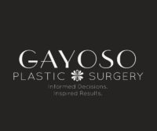
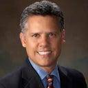

Gayoso Plastic Surgery in Saint Petersburg, Florida 33705
Name: Gayoso Plastic Surgery
Display name: Gayoso Plastic Surgery
Mission: At Gayoso Plastic Surgery and MedSpa, we operate not just to make people look different, but also to make body parts function better. Our team provides a safe, judgment-free space for you to tell us your goals and expectations. From the front desk to recovery, we work with you to make sure you are comfortable and confident every step of the way. The most rewarding part for us is to hear how your procedure has changed your life for the better.
Website: https://www.gayosoplasticsurgery.com/
Phone: (727) 472-4084
Twilio phone: (727) 472-4084
Address: 1116 Dr. MLK Jr. St. N, Saint Petersburg, Florida, USA, 33705
City: Saint Petersburg
State: Florida
Country code: US
Postal code: 33705
Phone: +17278951515
Neighborhood: Historic Uptown
Country: USA
GPS coordinates on map: 27.7833536,-82.6469727
Treatments:
- African American Rhinoplasty
- AlloDerm
- Arm Lift
- Asian Rhinoplasty
- Bellafill
- Body Lift
- Botox
- Botox for Gummy Smile
- Botox for Hyperhidrosis
- Brazilian Butt Lift
- Breast Augmentation
- Breast Fat Transfer
- Breast Implant Removal
- Breast Implant Revision
- Breast Implants
- Breast Lift
- Breast Lift with Implants
- Breast Reduction
- BroadBand Light (BBL)
- Brow Lift
- Buccal Fat Removal
- Butt Augmentation
- Butt Implants
- Butt Lift
- Cheek Augmentation
- Cheek Lift
- Chemical Peel
- Chin Filler
- Chin Implant
- Chin Liposuction
- Genioplasty
- CO2 Laser
- CoolMini
- CoolSculpting
- CoolTone
- Cryolipolysis
- Drainless Tummy Tuck
- Dysport
- Ear Surgery
- Earlobe Repair
- Eyelid Surgery
- Facelift
- Facial Fat Transfer
- Facial Reconstructive Surgery
- Fractional Laser
- Gynecomastia Surgery
- Halo Laser
- Hand Rejuvenation
- Hyaluronidase
- Ideal Implant
- Dermal Fillers
- Inspira Breast Implants
- Juvederm
- Kybella
- Labiaplasty
- Laser Hair Removal
- Laser Resurfacing
- Latisse
- Lip Fillers
- Lip Implants
- Lip Lift
- Lip Surgery
- Liposuction
- Liquid Facelift
- Lower Facelift
- Male Tummy Tuck
- Microdermabrasion
- Microneedling
- Mini Facelift
- Mini Tummy Tuck
- Mommy Makeover
- Natrelle Breast Implants
- Neck Lift
- Nipple Reduction
- Nipple Surgery
- Nonsurgical Facelift
- Nonsurgical Neck Lift
- Nonsurgical Nose Job
- Permanent Makeup
- Power-Assisted Liposuction (PAL)
- PRP Injections
- Pulsed Dye Laser
- Retin-A
- Revision Rhinoplasty
- Rhinoplasty
- SAFELipo
- Scar Removal
- Septoplasty
- Skin Lightening
- Skin Rejuvenation
- Skin Tightening
- SkinMedica
- SkinPen
- SMAS Facelift
- Strattice
- Tattoo Removal
- TCA Peel
- ThermiSmooth Face
- ThermiVa
- Thigh Lift
- Thread Lift
- Tumescent Liposuction
- Tummy Tuck
- Tummy Tuck Revision
- Vampire Facelift
- Vaser Liposuction
- Volbella
- Vollure
- Voluma
- Xeomin
- Silhouette InstaLift

Gayoso Plastic Surgery
RealSelf Info
Profile created: Jul 8, 2020
Profile modified: Nov 10, 2023
Business type: Practice
Is national account: 0
Review count: 2
Rating: 3.5
RealSelf’s PRO: Yes
Realself network status: candidate
Profile views: 0
Doctors

Antonio Gayoso, MD
Name: Antonio Gayoso, MD
Statement: Informed Decisions. Inspired Results. That’s the philosophy of Gayoso Plastic Surgery. A well educated patient is a key factor for successful surgical outcomes. We take pride in being patient education focused and are always honored when patients choose Gayoso Plastic Surgery.
Began aesthetic medicine in: 1998
Rating: 4.8
Francis Beninger, MD
Name: Francis Beninger, MD
Statement: Dr. Frank Beninger is board-certified in plastic surgery and fellowship-trained at the esteemed Manhattan Eye, Ear, and Throat Hospital in New York City. With over 24 years of experience, you can feel confident working with Dr. Beninger at Gayoso Plastic Surgery and MedSpa, an office known for making patients feel welcomed and accepted.
Began aesthetic medicine in: 1997
Rating: 4.3
Staff
Jessica McCarry
Name: Jessica McCarry
Position: Physician Assistant
Biography: Jessica McCarry, PA-C is a board-certified physician assistant from the Tampa Bay area and one of our partners at Gayoso Plastic Surgery and MedSpa. She completed a plastic surgery rotation with our office while in PA school and joined the Gayoso Plastic Surgery and MedSpa team right after graduation. Jessica has focused her career solely on aesthetic medicine. She spent the first two years assisting Dr. Gayoso in surgery while quickly building her non-surgical practice. Her experience in the operating room gives her extensive knowledge of facial anatomy and aesthetic medicine. She currently specializes in non-surgical procedures including botulinum toxin (Botox®), filler, threads, and laser.
Annie Smalley
Name: Annie Smalley
Position: Nurse Practitioner
Biography: Meet one of our non-surgical providers at Gayoso Plastic Surgery and MedSpa: Annie Smalley, FNP-C. Annie is a Board-Certified Nurse Practitioner born and raised in the Tampa Bay area. Annie comes to us with extensive experience in both surgical and dermatological specialties, creating a solid foundation for her to pursue her ultimate passion, aesthetics.
Tegan Rich
Name: Tegan Rich
Position: Master Aesthetician
Biography: Meet our medical aesthetician at Gayoso Plastic Surgery and MedSpa, Tegan Rich. For over nine years, she has practiced as a licensed aesthetician. She started her journey as an aesthetician in the pursuit of better skin health. The more she learned about her skin, the more she fell in love with the aesthetic industry. In her previous experience, she has built training modules for newly onboarded aestheticians, helped rebrand two aesthetic departments and developed new and effective protocols tailored to meet individual skin needs.
Amy Watt, CST
Name: Amy Watt, CST
Position: Staff
Biography: Amy Watt, CST has been a member of Gayoso Plastic Surgery and MedSpa since 2017. She graduated in 2001 from Central Florida Institute with a specialized associate degree in surgical technology. Amy began her career assisting Dr. Gayoso and continues to do so today. With years of experience in the operating room, Amy provides exceptional surgical assistance to our surgeons. Amy enjoys spending time with her family on the water, either kayaking or relaxing at the beach. She is thrilled to continue her career in the specialty she has been passionate about for over 20 years.
Christina Procaccini, RN
Name: Christina Procaccini, RN
Position: Registered Nurse
Biography: Christina has been an RN since 2015. She started her nursing career in the Emergency Department and quickly realized the surgical setting was her passion. She has worked in all areas of surgery, but her favorite is the operating room. Christina is an advocate for her patients, and her compassion and positive attitude quickly puts them at ease. After moving to Florida, Christina joined Gayoso Plastic Surgery and MedSpa in March 2021 but remains a Jersey girl at heart. Christina is a team player and truly enjoys lending a hand wherever she can. In her spare time, she loves all things health and fitness. If you have a conversation with Christina, her Peloton is likely to come up. She welcomed her first child into the world in February 2023 and he is the light of her life. She also enjoys cooking for her family, kayaking and boating with her husband, and going on walks with her two rescue pups, Duke and Daisy.
Alexis Rauso, RN
Name: Alexis Rauso, RN
Position: Registered Nurse
Biography: Alexis has been an RN since 1995. She grew up in Pittsburgh, Pennsylvania, where she began her nursing career as a long-term care nurse. Looking for a new adventure, she moved to Steamboat Springs, Colorado, where she was selected to participate in a perioperative 101 course and quickly fell in love with the OR. She lived and worked in Steamboat Springs for 20 years, specializing in orthopedic trauma and sports medicine. After that, she wanted another adventure and began travel nursing. Her last travel assignment was in St. Petersburg, and she decided to stay. Alexis joined Gayoso Plastic Surgery and MedSpa in February 2022. Alexis strives to give her patients the best possible surgical experience. When Alexis isn’t working, she enjoys spending time with her dog Thor, doing yoga, and training in Brazilian jiu-jitsu.
Victoria Ernst, CST
Name: Victoria Ernst, CST
Position: Staff
Biography: Victoria completed her degree in Surgical Technology at Trocaire College in 2021. Originally a Buffalo, NY native (GO BILLS), she made her way down to the sunshine state after graduation. Before joining the Gayoso Plastic Surgery team, Victoria worked for an eye/oculoplastic surgery center in Tampa, FL. When she’s not scrubbed into surgery, you can find Victoria at the beach soaking up the sunshine. She is often wearing Buffalo Bills apparel to represent her beloved team. If she’s not outside enjoying the Florida weather, she’s probably at home caring for her fur babies: Alvin and Bubbles. Victoria is excited to be a first-time mom in May 2023 to her beautiful daughter.
Diane Barnes
Name: Diane Barnes
Position: Staff
Tammy Madaris
Name: Tammy Madaris
Position: Patient Care Coordinator
Nancy Banks
Name: Nancy Banks
Position: Patient Care Coordinator
Becky Hill
Name: Becky Hill
Position: Receptionist
Tiffany Travis
Name: Tiffany Travis
Position: Receptionist
Gina Pollick
Name: Gina Pollick
Position: Medical Assistant
Biography: Gina Pollick joined Gayoso Plastic Surgery in 2015 as our medical assistant. In January of 2018, she became our Coolsculpting Team Lead and has completed advanced training thru Coolsculpting University. Under her efforts, our practice has grown to be a leading Coolsculpting practice in the Tampa Bay Area. An avid fan of helping people improve themselves, she brings enthusiasm and a love of plastic surgery to our office. Born in New Jersey but a Florida girl from age 11, Gina is married with 2 children and is devoted to her furry family of 3 Yorkies and one Pomeranian, all rescues. Gina takes a personal interest in learning about each of our patients so that she can assist them in being educated about their procedures and what to expect before and after surgery. She works hand in hand with our clinic staff and PA-C in providing comprehensive, individualized care.

Nicole Wallig
Name: Nicole Wallig
Position: Registered Nurse
Ana Tabakovic
Name: Ana Tabakovic
Position: Medical Assistant
Practice’s answers
Question
Answer Header & Date
Answer Snippet
There’s not much info on subglandular breast augmentation recovery. Curious how soon most patients
recuperation from Subglandular breast augmentation
Jul 11, 2018
Jul 11, 2018
The recuperation from subglandular and submuscular is really the same. There may be a little less pain post operatively from subglandular but this is minimal with careful technique. You should be able to raise your arms for example to wash your hair, within a day or two after surgery. Most surgeons would recommend that you do NOT lift weights, engage in any cardio activities (even walking on a treadmill), or doing things which may raise you heart rate or blood…
What is this white-ish spot in my incision? I am 4 weeks post-op BA today.
White spot in incision
Jun 20, 2018
Jun 20, 2018
Thank you for your question. It is always concerning when you are not sure about your healing. It is difficult to say for sure by just looking at the photo, but things like this are not uncommon. Quite often an incision may develop a little red spot which opens up and then becomes a white spot. This is due to some inflammation around suture material (stitches) which are placed beneath the skin surface. This is called suture spitting. By itself it is not…
How does smoking affect facelift surgery? Was told to quit smoking 3 wks. prior to surgery. May I
Smoking during face lift healing
Mar 28, 2017
Mar 28, 2017
Thank you for asking a very common question.
First of all I ask my patients to quit smoking at least 3 weeks prior to surgery. This is because quitting smoking is a very stressful period and should not be superimposed on the stress of recent surgery. It is better to focus on one aspect at a time. Also, if you quit a few days before, you will likely have increased sputum production and coughing which is dangerous in the immediate healing period. Coughing causes a…
First of all I ask my patients to quit smoking at least 3 weeks prior to surgery. This is because quitting smoking is a very stressful period and should not be superimposed on the stress of recent surgery. It is better to focus on one aspect at a time. Also, if you quit a few days before, you will likely have increased sputum production and coughing which is dangerous in the immediate healing period. Coughing causes a…
Last updated on 12/03/2023